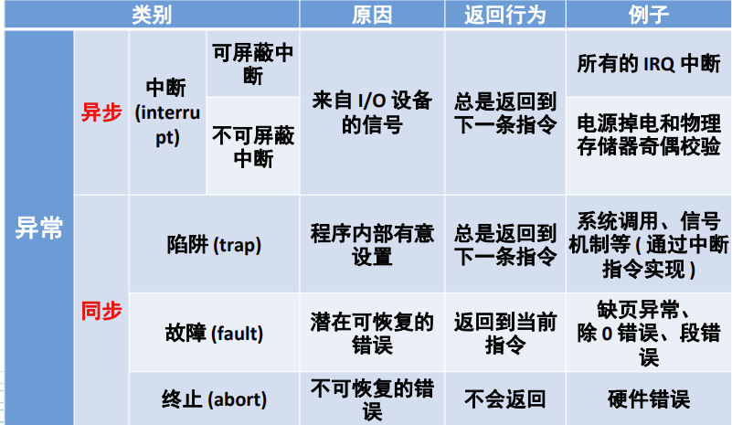
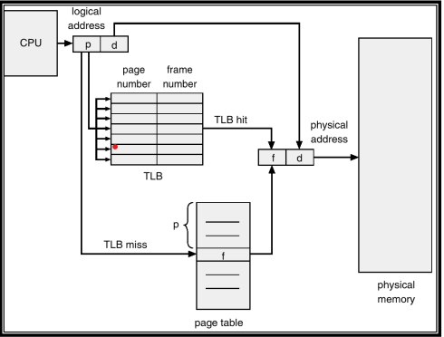
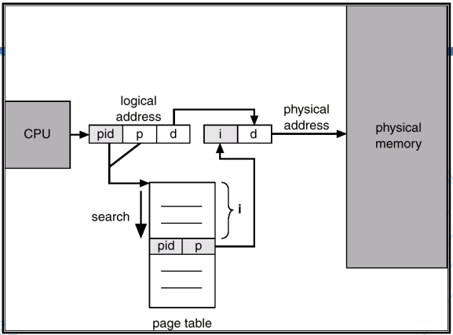
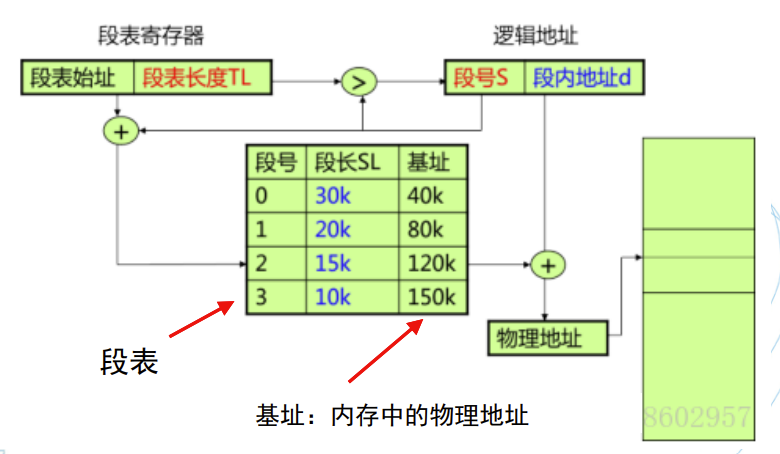
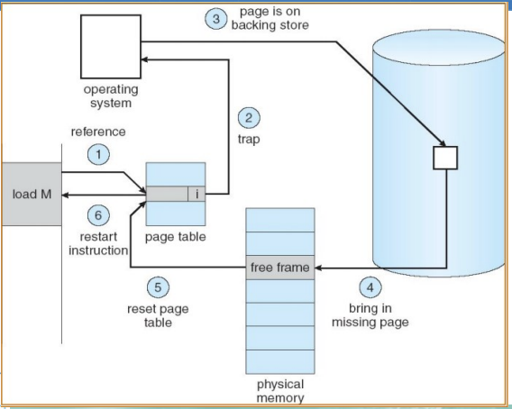
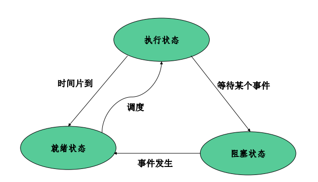

OS理论学习
期中复习
这是什么样的微风，我找不到准确的表述语句，只找到一连串的不是，不是杜甫“细草微风岸”的风，不是高骈“水晶帘动微风起”的风，冯延巳的“吹皱一池春水”是因为“风乍起”，过于突然，也不是，更不是“风萧萧兮易水寒”里的风，山谷微风不是壮志凌云之风，不会去送别荆轲，它知道自已普通微小，所以低调，其低调有点像我少年时期在炎热夏天里寻找的穿堂风。
概述与启动
分布式系统
在整个系统中有一个全局的操作系统
有网络作为底层支持
特性
- 模块性
- 并行性
- 自治性
- 通信性
操作系统作用：管理资源，提供硬件访问的统一接口
操作系统的发展：
- 单任务串行 - 多任务并发
- 单处理器 - 多处理器 - 分布式网络化
多任务操作系统基本原理
分时——多个用户/任务互不干扰地使用资源
分时的基本方式（隔离手段）
虚拟：隔离所有资源
抽象：进程（隔离处理器、储存器）
TRAP指令：目态 - 管态 （用户 - 内核态）
异常：陷阱和中断
- 中断主要由I/O设备、处理器时钟或定时器等硬件产生，可以被启用和禁用
- 陷阱/陷入是用户进程中某一特定指令执行的结果，在相同条件下，异常可以重现。例如内存访问错误、调试指 令以及被零除
- 系统调用是同步异常
- 陷阱帧：完整的线程描述表的自己，用于陷阱保护
- 陷阱处理程序处理少量事件，多数转交给其他的内核或 执行体模块处理

操作系统特征
- 并发
- 共享（互斥共享（打印机、变量），同时访问（宏观））
- 虚拟
- 异步性
OS功能
- 处理机管理——分配CPU时间
- 储存器管理——管理缓存、主存、磁盘等所 形成的多级存储架构，为多道程序的并 发提供良好的环境
- 设备管理——管理输入/输出设备，屏蔽差 异性，提供并发访问
- 文件系统——将磁盘变成一个很容易使用的 存储媒介提供给用户使用
- 作业控制——作业调度
操作系统的基本类型
- 工作方式：批处理系统、分时系统、实时系统、混合型
- 架构：微内核、宏内核、外内核
微内核
内核中只包括中断处理、进程通信（IPC）、 基本调度等
优点：内核易于实现、可靠性高、可移植性好、配置灵活、 适应分布式环境
缺点：速度慢
引导加载程序是系统加电后运行的第一段程序，称为Bootloader
Bios
bios设置程序是被固化到电脑主板上的ROM芯片中的一组程序（断电后不会丢失的只读程序）
- 硬件自检
- 读取启动顺序
例题：在传统x86体系结构下，计算机引导过程中以下哪项不是 BIOS负责的任务？
- 读取MBR并装载到内存特定地址（Bootloader）
- 自检系统，当有设备故障时暂停启动过程并告警（Bios）
- 选择引导磁盘（Bios）
- 装载打印机驱动（没必要）
- 启动显示器（Bios）
- 解压缩操作系统Kernel（Bootloader）
系统引导
MBR（Master Boot Record）：磁盘的第0磁头第0磁道的第一个扇区
Bootloader：操作系统内核运行前执行的一小段程序
BootLoader
操作系统内核运行前的一小段程序
储存与管理
储存管理至少要解决分配与回收
- 地址空间：逻辑地址的集合
- 储存空间：逻辑地址的集合
单道程序的内存管理
内存中只有两个程序——用户程序和操作系统
用户程序的地址再运行之前可以运算
优点：简单
缺点：比物理内存大的程序无法加载、小程序会造成空间浪费
多道程序设计
空间的分配：分区式分配，把内存分为一些大小相等或者不等的分区
- 固定式分区分配（静态）：程序适应分区
- 可变式分区分配（动态）：分区适应程序
固定式分区
系统初始化时，把储存空间划分为若干个任意大小的区域，然后将这些区域分配个每个用户作业。
- 分区大小相等：只适用于多个相同程序的并发执行（处理多个类型相同的对象）
- 分区大小不等：多个小分区、适量的中等分区、少量 的大分区。根据程序的大小，分配当前空闲的、适当 大小的分区
优点：易于实现，开销小
缺点：内碎片造成浪费，分区总数固定，限制并发执行的程序数量
- 单一队列的分配方式
多个用户程序排在一个 共同的队列里面等待分区
- 对队列分配方式
每个分区一个 队列，程序按照大小排在相应的队列里，避免给小程序分配大空间
可变式分区
分区的边界可以移动，即分区大小可变
优点：没有内碎片，缺点：有外碎片
碎片
内存中无法被利用的储存空间
- 内碎片
分配给作业的储存空间中未被利用的部分，已分配只是未被使用，完成后会得到释放
- 外碎片
分区与分区之间存在的碎片。外部碎片是造成内存系统性能下降的主要原因，外部碎片可以被整理后消除（消除外部碎片的方法：紧凑技术）
闲置空间的管理
- 位图表示法
字位取值为0表示闲置，为1表示占用
空间成本固定，时间成本低，没有容错
- 链表表示法
将分配单元链接起来
空间成本取决于程序的数量，时间成本扫描速度较慢，有一点容错能力
分配算法
- 首次适应（First Fit）
从空白区域链的始端开始查找，选择第一个满足情况的空白快
低地址肯留下难以利用的小空间
- 下次适应算法（Next Fit）
从上次查找结束的地方开始，找到一个足够大的空白区将它划分后分配出去
利用更均衡，可能导致缺乏大空间
- 最佳适应算法（Best Fit）
大小最合适的储存区域
使得剩下的空闲区非常小，从而留下许多难以利用的碎片
- 最坏适应算法（Worst Fit）
总是寻找最大空白区
后续可能不能应对大空闲区
索引搜索分配
快速适应分配（分类搜索）
按空闲分区的大小进行分类，经常用到长度的空闲区设立单独的空闲区链表。系统为多个空闲链表设立 一张管理索引表。
优点：查找效率高，不会对任何分区产生分割，能保留大的分区，也不会产生内存碎片
缺点：算法复杂，分配分区时以进程为单位，一个分区只属于一个进程，造成浪费。
伙伴系统
伙伴系统是介于固定分区与可变分区的动态分区技术
规定：大小均为2的k次幂
内存释放首先将被释放块与其伙伴合并为一个大的空闲块，直到不能合并。
注意：如果两个储存快大小相等且地址相邻但不是由一个大块分裂出来的，则不可以被合并起来。
即会产生内碎片又会产生外碎片
可重定位分区分配
定时的或内存紧张时，移动某些已分配区中的信息，把储存空间中所有的空白区合并为一个大的连续区。
缺点：性能开销大，依赖DMA，间接寻址
程序处理流程
编译 - 链接 - 装入
程序的链接
- 静态链接
用户一个工程中所需的多个程序采用静态链接的方式链接在一起。当我们希望共享库的函数代码直接链接入程序代码中，也采用静态链接方式
- 动态链接
用于链接共享库代码。当程序运行中需要某些目标模块时，才对它们进行链接，具有高效且节省内存空间的优点。但相比静态链接， 使用动态链接库的程序相对慢
程序装入
未来保证程序地址可以改变，程序运行时才把相对地址转化为绝对地址
多重分区分配：一个作业往往由相对独立 的程序段和数据段组成，将这些片断分别 装入到存储空间中不同的区域内的分配方式。
- bss段 存放未初始化的全局变量
- data段 存放已经初始化的全局变量
- text段 代码段
程序链接
将.o文件链接在一起，形成最终的可执行文件，链接时会扫描各个文件，将之前未填写的地址田神，形成一个可执行的文件。
程序的装载与运行
- shell调用fork系统调用
- 创建出一个子进程
- 子进程调用execve（）加载program
一个segment在文件中的大小小于等于在内存中的大小
程序装载过程
- 读取ELF头部的魔数确认是ELF文件
- 找到段表项
- 对于每个段表项解析出各个段应对被加载到虚拟地址、在文件中的偏移，以及在内存中的大小和在文件中的大小（段在文件中的大小小于等于内存中的大小）
程序、进程和作业
- 程序：静止的，存放在磁盘上的可执行文件（静态概念）
- 进程：包括程序和程序处理对象，是程序对某个数据集的执行过程，是分配资源的基本单位。进程是竞争计算机系统有限资源的基本单位。 进程更能真实地描述并发，而程序不能。每一个进程由进程控制块PCB、程序和数据集合组成。
- 完成操作系统功能的进程是系统进程
- 完成用户功能的是用户进程
- 作业时计算机所做工作的集合。作业时任务实体，进程是执行实体
一个程序可以作为多个进程的运行程序，一个进程也可以运行多个程序
页式储存管理
- 页：把每个作业的地址空间分为一些大小相等的片成为页面或页
- 储存块：把主存的存储空间也分成与页面相同大小的片，这些片称为存储块，或称为页框。
纯分页系统
不具备页面置换功能，必须把它的所有页一次装到主存的页框内；如果当时页框数不足，则该作业必须等待，系统再调度另外作业。
没有外碎片，每个内碎片不超过页大小
程序不必连续存放，便于改变程序占用空间大小
页面大小分析
- 大
- 优点：页面数减少，页表长度减少，内存减少，I/O减少
- 缺点：内碎片增大，不利于提高内存利用率
- 小
- 优点：减少页内碎片和总的内存碎片，有利于提高内存利用率
- 缺点：页面数增大，页表长度增加，内存增大，I/O增大
逻辑上相邻，物理上不一定相邻
- 进程页表，每个进程都有的一个页表，描述进程占用的物理空间和逻辑排列顺序
- 物理页面表，整个系统有一个物理页面表，描述物理内存空间的的分配使用情况
- 请求表，整个系统有一个请求表描述系统内进程表的位置和大小
假定进程平均占用s个字节，页面大小是p个字节，一个页表项约占e字节
- 分页的开销为：se/p+p/2
页表机制
分级越多，内存空间确实使用少了，但访问时间大大增加。于是引入了MMU，组成如下
- 页表Cache（TLB）
- 页表查找单元

某些TLB还包括地址空间标识码（ASID）
哈希页表、反置页表
反置页表介绍（解决消耗大量物理内存的问题）
- 按照物理页号排序，表项的内容是逻辑页号 P 及隶属进程标志符 pid
- 大小只与物理内存的大小相关

页保护
- 地址越界保护
- 设置保护位（只读等）
页共享
分段储存管理
段式储存管理
页式储存信息的物理单元，段是信息的逻辑单位
信息保护
- 页式管理中，一个页面中可能装有 2 个不同的子程序段的指令代码，不能通过页面共享实现共享一个逻辑上完整的子程序或数据块
- 段式管理中，可以以信息的逻辑单位进行保护。
逻辑地址结构：段号 + 位移量W ，但不一定是32位

可重入代码
可重入代码(Reentrant Code) 又称为“纯代码”(Pure Code)，是一种允许多个进程同时访问的代码。为使各个进程所执行的代码完全相同， 绝对不允许可重入代码在执行中有任何改变。因此，可重入代码是一 种不允许任何进程对它进行修改的代码。
优点：分段系统已于实现段的共享，对段的保护也十分简单
缺点：地址转换耗时，空间问题
段页式储存管理
分段和分页结合
先把用户程序分为若干个段，再把每个段分为若干页
格式：段号 - 段内页号 - 页内地址
X86的段页式地址映射
段映射机制，将逻辑地址映射到线性地址
页映射机制，将线性地址映射到物理地址
X86的控制寄存器
- CR0中含有控制处理器操作模式和状态的系统 控制标志；
- CR1保留不用
- CR2含有导致页错误的线性地址
- CR3中含有页目录表物理内存基地址（PDBR）
虚拟内存管理
- 覆盖（时间，时间上扩展）
把程序执行时并不要求同时装入主存的覆盖组成一组，称其为覆盖段，这个覆盖段被分配到同一个存储区域。这个存储区域称之为覆盖区，它与覆盖段一一对应。
- 交换（借用，空间上扩展）
是把暂时不用的某个（或某些）程序及其数据的部分或全部从主存 移到辅存中去，以便腾出必要的存储空间
局部性原理
- 时间局部性
一条指令的一次执行和下次执行，一个数据的一次访问和下次访问都集中在 一个较短时期内
- 空间局部性
即当前指令和邻近的几条指令， 当前访问的数据和邻近的数据都集中在一个较小区域内
虚拟内存
- 按需装入
- 缺页装入
- 不用调出
特征
- 离散性
- 多次性
- 对换性
- 虚拟
虚拟性以多次性和对换性为基础， 多次性和对换性必须以离散分配为基础
优点：
- 较小的内存中执行较大的用户程序
- 容纳更多程序并发执行
代价：牺牲CPU
限制：虚拟内存的最大容量有计算机的地址结构决定（32位-4G）
实存与虚存
实存
- 分区
- 分页
- 分段
- 段页式
虚存
- 请求分页
- 请求分段
- 请求段页式
请求式分页
虚拟存储系统：控制自动页面交换而用户页面意识不到的那个机构
进程的虚拟地址空间为进程在内存中存放的逻辑视图，因此一个进程的虚拟地址空间的大小和该进程的虚拟储存空间相同。（从0开始的编址的虚拟储存空间又称虚拟内存空间）
调入问题
什么程序和数据调入
- OS的核心部分的程序和数据
- 正在运行的用户程序相关的程序和数据
何时调入
OS系统启动时调入
用户程序调用取决与策略
- 预调页（pre-paging）
预调页同时 将所需要的所有页一起调入内存，从而阻止 了大量的页错误
- 按需调页
当且仅当需要某页时才将该页调入内存的技术称为按需调页，使用懒惰交换（lazy swapper），按需调页需要使用备份存储，保存不在内存中的 页，通常为快速磁盘，用于和内存交换页的部分空间称为交换空间
如何调入
- 缺页错误处理机制
缺页错误处理机制

处理过程
- 陷入内核，保护现场
- 查找页面
- 权限检查，发生保护错误则杀死进程
- 查找空闲页框，如果没有则需要通过页面置换算法找到一个需要换出的页框
- 如果找到页框被修改了，则需要将修改的内容保护到磁盘上
- 页面干净后，操作系统将保存在磁盘上的页面内容复制到该页框
- 当磁盘中的页面内容全部装入页框后，向操作系统发送一个中断。操作系统更新内存中的页表项，将虚拟页面映射的页框号更新为写入的页框，并将页框标记为正常状态。（更新页表）
- 恢复进程
- 继续执行
页面置换策略
- 最优置换（OPT算法）
置换未来最久不被使用的，最完美但是不现实
- 先进先出（FIFO）
性能较差，会出现Belady现象
FIFO算法的置换特征与进程访问内存的动态特征是矛盾的
- 改进FIFO（Second Chance）
每个页面增加一个访问位，A是FIFO队列中最旧的页面，且其放入队列后没有被再次访问，则A被立刻淘汰否则如果放入队列后被访问过，则将A移到FIFO队列头，并且将访问标志位清除。如果所有的页面都被访问过，则经过一次循环后就会按照FIFO的原则淘汰。
- 改进FIFO（Clock），最近未使用算法
使用环形队列
产生缺页错误时，当前指针指向C，如果C被访问过，则清除C的访问标志，并将指针指向D；如果C没有被访问过，则将新页面放入到C的位置，置访问标志， 并将指针指向D
- 最近最少使用（LRU）
性能接近最优算法，设置一个特殊的栈，保存当前使用的各个页面的页面号。每当进程访问某页面时，便将该页面的页面号从栈中移出，将它压入栈顶。栈底始终是最近最久未使用页面的页面号
- 老化算法（AGING）
为每个页面设置一个移位寄存器，并设置一位访问位R， 每隔一段时间，所有寄存器右移1位，并将R值从左移入。
Belady现象
分配的页面增多，缺页率反而提高的现象
进程的工作集：当前正在使用的页面集合
进程的驻留集：虚拟存储系统中，每个进程驻留在内存的页面集合或进程分到的物理页框集合
抖动
随着驻留内存的进程数目增加，或者说进程并发水平的上升，处理器利用率先是上升，然后下降。(常驻集减少，缺页率增加，频繁调页)
写时复制（copy-on-write）
资源的复制只有在需要写入的时候才进行。
自映射！！！
详见作业3类似于不动点
进程与并发程序
并发与并行
并发：直要都在各自起点与重点之间就是并发执行，程序的并发执行是指若干个程序（或程序段） 同时在系统中运行，这些程序（或程序段）的 执行在时间上是重叠的。
并行：两程序在同一时间量度下同时运行在不同的处理机上，则称这两个程序是并行执行的
并发可能是伪并行
顺序执行
- 顺序性
- 封闭性
- 可再现性
并发执行
- 间断性
- 非封闭性
- 不可再现性
Bernstein条件
以下条件同时成立时，S1与S2可并发
- $R(S1) \cap W(S2) = \emptyset$
- $W(S1) \cap R(S2) = \emptyset$
- $W(S1) \cap W(S2) = \emptyset$
进程
进程是程序的一次执行
- 动态性
- 并发性
- 独立性
- 异步性（进程之间相互制约）
结构特征：程序段、数据段、进程控制块（PCB）
进程控制
主要任务：创建和撤销进程，实现进程的状态转化（内核实现）
进程控制实现：原语（由若干条指令所组成的指令序列，来 实现某个特定的操作功能）
- 指令序列执行是连续的不可分割
- 操作系统核心组成部分
- 必须在管态执行，且常驻内存
Fork（）函数
在fork函数执行完毕后，如果创建新进程成功，则出 现两个进程，一个是子进程，一个是父进程。在子进 程中，fork函数返回0，在父进程中，fork返回新创建 子进程的进程ID。我们可以通过fork返回的值来判断 当前进程是子进程还是父进程。
fork被调用一次，但返回两次
进程的状态
- 就绪：等待分配处理机资源
- 执行：占用处理机资源
- 阻塞：放弃处理机处于暂停状态

运行 $\rightarrow$ 就绪
- 运行进程用完时间片
- 运行进程被中断，因为一高优先级进程处于就绪状态
运行 $\rightarrow$ 阻塞
- 进程所需资源必须等待
- OS尚未完成服务
- 对一资源访问不能进行
- 初始化I/O必须等待
- 等待某一进程提供输出
线程
进程包括了两个概念：资源拥有者和可执行单元
资源拥有者为进程，可执行单元为线程
线程：将资源与计算分离，提高并发效率
- 减小线程切换开销
- 提高进程内的并发程度
- 共享资源
线程是进程中的一个实体，是一个CPU调度和分配的单元
容易创建和撤销
一个进程可以拥有多个线程，而一个线程同时只能被一 个进程所拥有
进程是资源分配的基本单位，线程是处理机调度的基本单位
线程安全
多个线程调用同一个对象的行为都可以获得正确的结果
可重入不一定线程安全，线程安全不一定可重入
Linux下的线程创建
fork用于创建普通进程，clone可用于创建线程
fork和clone都调用do_fork函数执行创建进程的操作
用户级线程
- 线程切换与内核无关，易优化，例子：java threads，但是易阻塞
内核级线程
- 内核级线程就是kernel有 好几个分身,一个分身可 以处理一件事
- 内核可以在多个处理器上调度一个进程的多个线程实现同步并执行，但切换过程会降低效率
线程模型
- Many-to-One
将多个用户级线程映射到一个内核级线程，线程管理在用户空间完成。线程管理在用户空间进行，效率较高，但某个线程在使用内核服务被阻塞时i，整个进程都会被阻塞
- One-to-One
将每个用户级线程映射到一个内核级线程。并发能力抢，但创建线程开销大，没创建一个内核级线程都需要创建一个内核级线程与其对应
- Many-to-Many
将 n 个用户级线程映射到 m 个内核级线程上，要求 m <= n。
临界资源与临界区
临界资源：一次仅允许一个线程访问的资源称为临界资源
临界区：每个进程中访问临界资源的那段代码
互斥与同步
- 进程互斥，间接制约关系，访问是无序访问，两个或两个以上的进程，不能同时进入关于同一组共享变量的临界区域
- 进程同步，直接制约关系，通过机制实现有序访问
互斥区管理条件
- 没有进程在临界区是，想进入临界区的进程可以进入
- 任何两个进程不能同时进入临界区
- 当一个进程在它的临界区外面外面时，不能妨碍其他进程进入临界区
- 任何一个进程进入临界区的要求应该在有限的时间内得到满足
设计原则
- 空闲让进
- 忙则等待
- 有限等待
- 让权等待
面包店算法
设置一个发号器，按由小到大的次序发放号码。进程进入临界区前先抓取一个号码，然后按号码从小到大的次序依次进入临界区。若多个进程抓到相同的号码则按进程编号依次进入
硬件方案
- 中断屏蔽
使用“开关中断”，简单但不适用于多CPU系统，可能会造成很大的性能损失
- test and set指令
在多进程可同时 存取内存的情况下，如果一个进程正在执行检查并设置， 在它执行完成前，其它的进程不可以执行检查并设置
- swap指令
和ts类似会循环交换两个变量
以上软硬件方案共性问题
- 忙等待：浪费CPU
- 优先级反转：低优先级进程先进入临界区，高优先级进程一直忙等